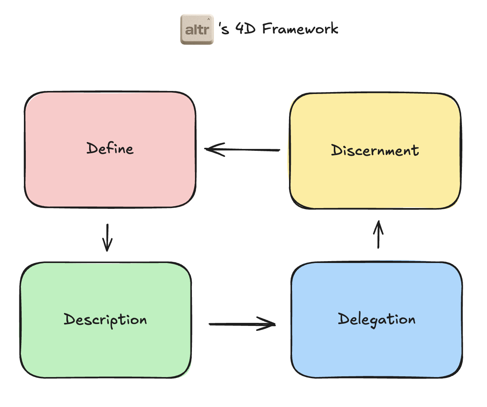
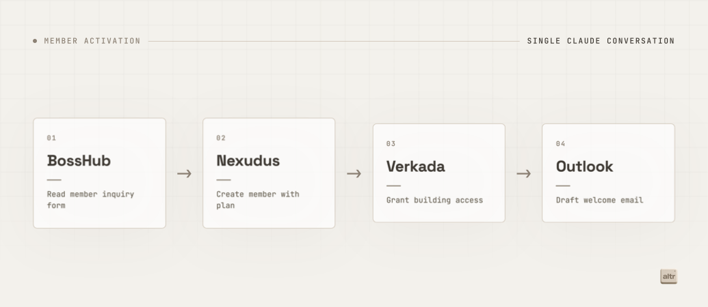
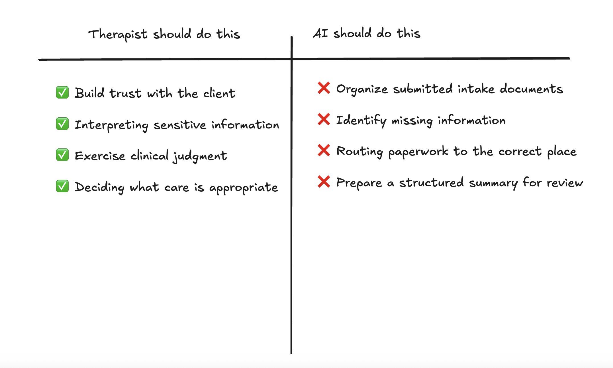
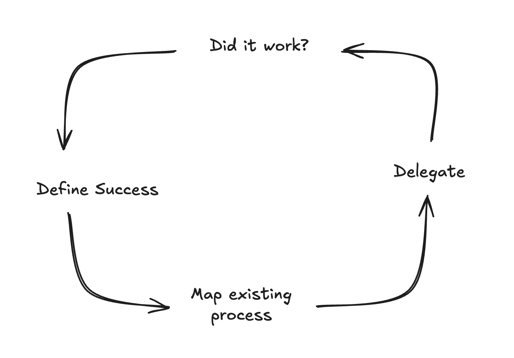

It's been three months since I left my dream job in sports and co-founded a company that teaches people how to use AI.
We’re currently working with multiple businesses, across different verticals that include:
- Non-Profits
- Therapists
- Commercial Real Estate Firms
- Marketing Agencies
One thing has stuck out across them all.
People matter most.
People?
Yes, the people who work in your business, and the people outside your business.
Think about it.
Non-Profits need to spend time building relationships in their community to raise awareness and find funding.
Therapists need to spend time building relationships to understand client needs and provide care.
Commercial Real Estate firms need to spend time building relationships to find new properties and close deals.
Marketing Agencies need to spend time building relationships to produce content for existing clients and find new ones.
AI will never take this away, and it's true for every single business.
So how do you identify opportunities in your business that save you time, to spend time with the people outside it?
Keep reading.
The Framework
Before we build any agent, workflow, etc., it is important to lay the ground rules for who we are as a partner.
- We are not here to "replace" anyone's job with AI.
- In order to improve existing processes, we have to be transparent about what doesn't work, without creating judgement.
Instead of asking team members "where are you struggling", we're asking "what's holding you back?"
Once we've defined the relationship between us and our client, we asses opportunities based on an internal 4D framework.

We took inspiration from Anthropic's AI Fluency they use to identify opportunities to use AI.
Define
This is how AI models are best prompted, by defining successful outcomes.
Our goal at this stage is to define what success looks like, for our existing clients that means:
- Defining successful member onboarding for non-profits.
- Defining successful client onboarding for therapists.
- Defining successful OM reviewal for commercial real estate firms.
- Defining successful asset editing for marketing agencies.
Description
Once we've defined what success looks like, we need to describe the existing process.
Most of the time, this is where we get to sit down side by side with members of the team to understand how work is currently completed.
What does this mean?
It means understanding the steps a human takes in order to get to the solution we defined in the first step.
Here’s a member onboarding example for on of our nonprofit clients.

Delegation
After defining what success looks like and describing the current process, it's time to decide on delegation.
At its core, delegation is split between:
- What work should you do yourself.
- What work might be better suited for AI.
This involves understanding a client's expertise.
Let's look at a real example.
Meeting with clients all day, a therapist's expertise is deeply rooted in client care. One area that consumes a lot of their time is client intake and paperwork.
With the right privacy and security controls in place, AI can help organize intake documents, identify missing information, and prepare a structured summary for the therapist to review.
But it should not decide what a client needs.
That requires judgment and empathy, the therapist's actual expertise.

Delegation is not about handing an entire workflow to AI. It is about separating the parts that require human expertise from the parts that consume human time.
We apply the same question to every client: Where does human judgment create the most value, and what surrounding work can technology help prepare?
Discernment
Delegating work to AI does not mean accepting every output it produces.
At this stage, we work with the client to determine whether the new process actually delivers the outcome we defined at the beginning.
For a therapist, an organized intake summary is only useful if it is accurate, complete, and easy to review before meeting with a client.
The therapist still reviews the source information, catches missing context, and decides what is relevant to the client's care.
This helps us learn which parts of the process AI can handle consistently, where human review is required, and where the workflow needs to improve.
If the result does not meet the standard we defined, we return to the beginning of the framework and adjust it.

Discernment turns the framework into a feedback loop. We are not just asking whether AI completed the task. We are asking whether it helped the person do their best work.
More Time for What Matters
AI is not the outcome.
The outcome is giving people more time to be... people. Using the skills a model will never have; empathy, judgement, trust, etc.
The process may look different for every client, but the questions remain the same.
Define: What does success look like?
Description: How does the work happen today?
Delegation: What should remain human? What can AI help prepare?
Discernment: And did the new process actually work?
By answering those questions alongside the people doing the work, we can build systems that support them instead of working around them.
We are not trying to remove people from the process. We are creating more room for them to focus on the parts of their work that matter most.